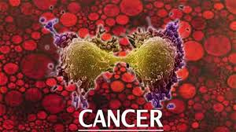
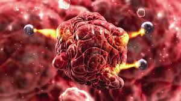

FCIH Hospital
Your Health Is Our Proiority

Cancer :
Cancer is a group of diseases involving abnormal cell growth with the potential to invade
or spread to other parts of the body.
These contrast with benign tumors, which do not spread to other parts of the body.
Possible signs and symptoms include a lump, abnormal bleeding, prolonged cough,
unexplained weight loss, and a change in bowel movements.
While these symptoms may indicate cancer, they may have other causes.
Over 100 types of cancers affect humans.

Causes of cancer :
The majority of cancers,some 90–95% of cases,are due to genetic mutations
from environmental factors.
The remaining 5–10% are due to inherited genetics.
Environmental, as used by cancer researchers, means any cause that is not inherited genetically,
such as lifestyle, economic and behavioral factors and not merely pollution.
Common environmental factors that contribute to cancer death include tobacco (25–30%),
diet and obesity (30–35%),infections (15–20%), radiation (both ionizing and non-ionizing, up to 10%), stress, lack of physical activity and pollution.
It is not generally possible to prove what caused a particular cancer because the various causes do not have specific fingerprints.
For example, if a person who uses tobacco heavily develops lung cancer, then it was probably caused by the tobacco use, but since everyone has a small chance of developing lung cancer as a result of air pollution or radiation, the cancer may have developed for one of those reasons.
Excepting the rare transmissions that occur with pregnancies and occasional organ donors, cancer is generally not a transmissible disease.